Progetto CPU multiciclo
1 Problemi con progetto a singolo ciclo
Il problema del singolo ciclo
- Ciclo di clock lungo
- Istruzioni potenzialmente più veloci sono rallentate
- Impiegano lo stesso tempo dell’istruzione più lenta
- Unità funzionali e collegamenti del Datapath sono replicati
- Dobbiamo poter eseguire in parallelo tutti i passi computazionali necessari per l’esecuzione di qualsiasi istruzione dell’ISA
Possibile soluzione:
- Datapath “multiciclo”
- Usiamo un ciclo più corto
- Istruzioni differenti impiegano un numero di cicli diversi
- Unità funzionali possono essere usate più volte per eseguire la stessa istruzione \(\rightarrow\) meno replicazione
- Basta usarle in cicli differenti
- Registri aggiuntivi
- Usati per memorizzare i risultati parziali nell’esecuzione delle istruzioni
2 Datapath multiciclo
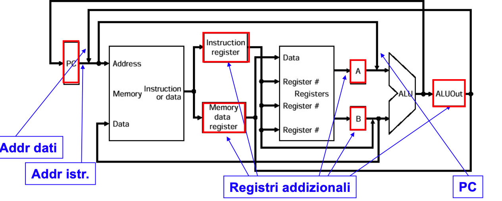
Registri interni addizionali usati per memorizzare valori intermedi, da usare nel ciclo di clock successivi per continuare l’esecuzione della stessa istruzione
- IR
- MDR
- A
- B
- ALUOut
Riuso di unità funzionali
- ALU usata anche per calcolare l’indirizzo dei salti e incrementare il PC
- Memoria usata sia per leggere le istruzioni che per leggere/scrivere i dati
3 Suddivisione in passi del Datapath
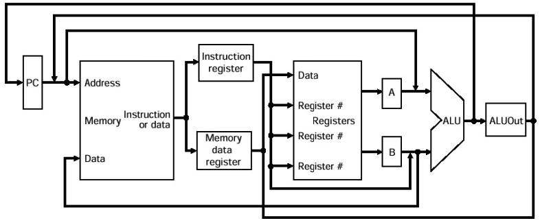
Ogni passo da eseguire in un ciclo di clock ( ciclo più corto rispetto alla CPU a ciclo singolo )
Importante il bilanciamento della quantità di lavoro eseguito nei vari passi, perchè dobbiamo fissare un ciclo di clock unico
- Determinato sulla base del passo più lungo, ovvero più costoso dal punto di vista computazionale
Al termine di ogni ciclo i valori intermedi sono memorizzati nei registri interni addizionali: da impiegare nei cicli successivi della stessa istruzione
Register File e PC sono invece impiegati per memorizzare valori da usare per l’esecuzione di una nuova istruzione
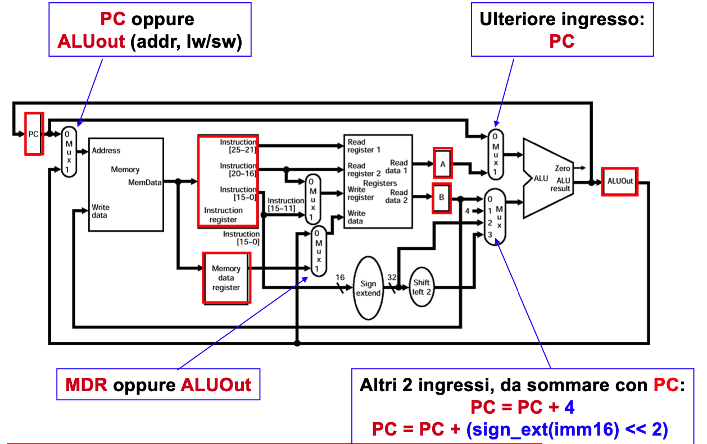
4 Sequenza dei cinque passi di esecuzione
- Fetch dell’istruzione e Incremento PC
- Decodifica dell’istruzione e Lettura dei registri ( e Addr. Branch )
- R-type exe o Calcolo Indirizzo Memoria o Completa Branch o Completa Jump
- Dipende dal tipo di istruzione
- Accesso alla memoria o Completa R-type ( Scrittura regs )
- Dipende dal tipo di istruzione
- Write back ( Scritttura reg: solo LW )
OGNI PASSO ESEGUITO IN UN CICLO DI CLOCK LE ISTRUZIONI IMPIEGANO DA 3 A 5 CICLI
5 Controllo
I segnali di controllo alle varie unità funzionali e ai multiplexer non dipendono solo dal tipo di istruzione, ma anche dallo specifico passo di esecuzione
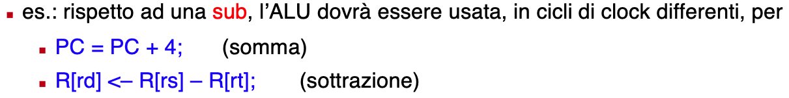
Il controllo sarà implementato come circuiti sequenziale
- L’output del circuito ( segnali di controllo ) dipenderà dallo stato interno al circuito al tempo t_i
- stato del circuito sequenziale = passo di esecuzione di un’istruzione
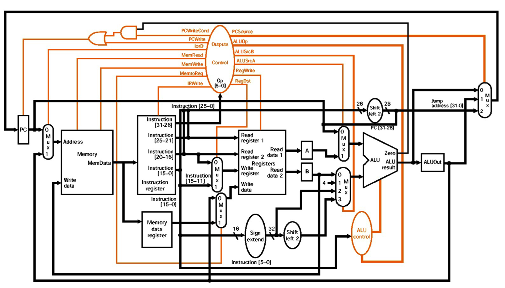
6 Segnali di controllo di 1 bit
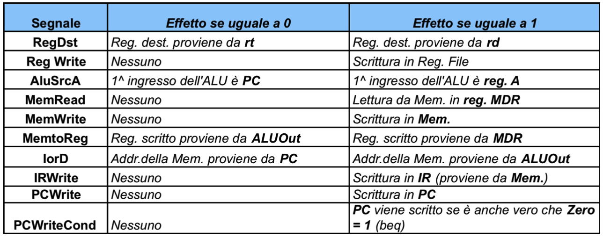
Per istruzioni di beq: PCWriteCond = 1 e PCWrite = 0 Il segnale di scrittura di PC e infatti calcolato come: \(PCWrite + (PCWriteCond \cdot Zero)\)
Se Zero = 0 il valore di PC che punta alla prossima istruzione rimane invariato
7 Segnali di controllo di 2 bit
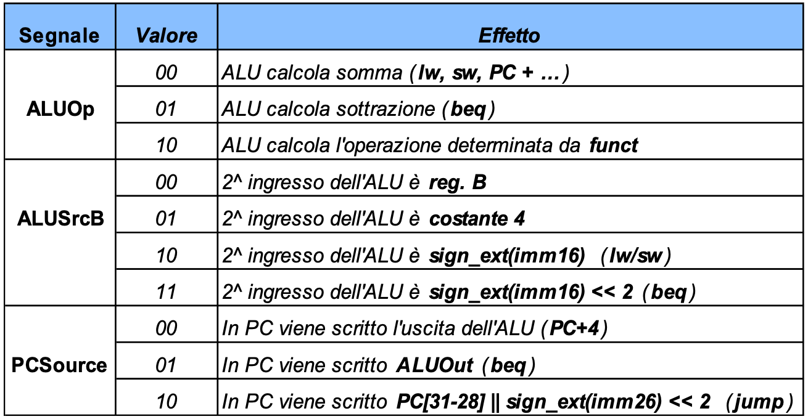
8 Passo 1: Fetch dell’istruzione
Usa PC per prelevare l’istruzione dalla memoria e porla nell’Instruction Register ( IR )
Incrementa PC di 4, e rimetti il risultato nel PC
Passo identico per tutte le istruzioni
Usanod la notazione RTL:
IR = M[PC]; PC = PC + 4;
Durante questo passo ( stesso ciclo di clock ) usiamo:
- Memoria
- ALU
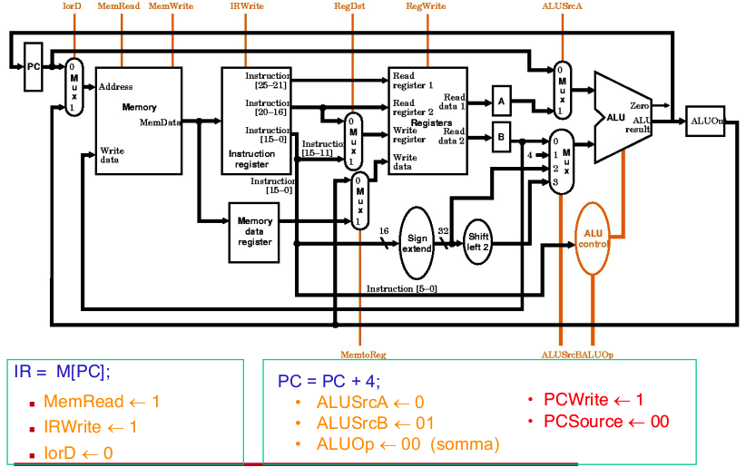
9 Passo 2: Decodifica istruzione & Lettura registri
Leggi i registri rs e rt, e calcola l’indirizzo del salto di beq
IR ( op ) viene inviato al controllo per la decodifica e la determinazione dei passi successivi \(\rightarrow\) Decodifica dell’istruzione
A = Reg[ IR[ 25-21 ] ]; B = Reg[ IR[ 20-16 ] ]; ALUOut = PC + ( sign-ext( IR[ 15-0 ] ) << 2 );
Passo identico per tutte le istruzione, ma potremmo anticipare del lavoro non necessario.
- Per certe istruzioni, i due campi ( rs, rt ) potremmo essere non significativi
- Calcoliamo l’indirizzo a cui saltare, come se l’istruzione fosse beq, ma il campo imm16 potrebbe essere non significativo
Quali i vantaggi di questo lavoro anticipato?
Durante questo passo ( durante lo stesso ciclo di clock ) usiamo: Register File e ALU
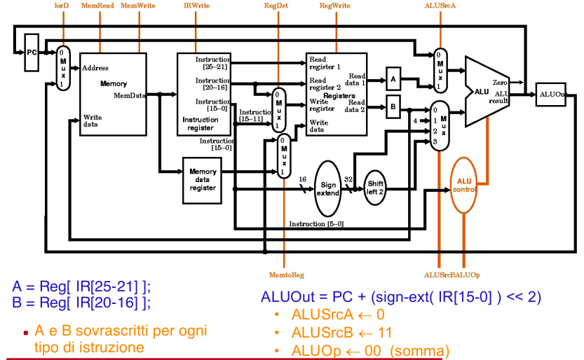
10 Passo 3: ( dipende dall’istruzione )
Usaiamo l’ALU in dipendenza del tipo di istruzione
Il controllo, avendo già decodificato l’istruzione letta al passo precedente, può già decidere i segnali da inviare al Datapath in relazione al tipo di istruzione
- R-Type exe:
- ALUOut = A op B;
- Calcolo Indirizzo Memoria (load/store)
- ALUOut = A + sign-ext(IR[15-0])
- Completa Branch
- if (A == B) then PC = ALUOut;
- Completa Jump
- PC = PC[31-28] || (IR[25-0] << 2);
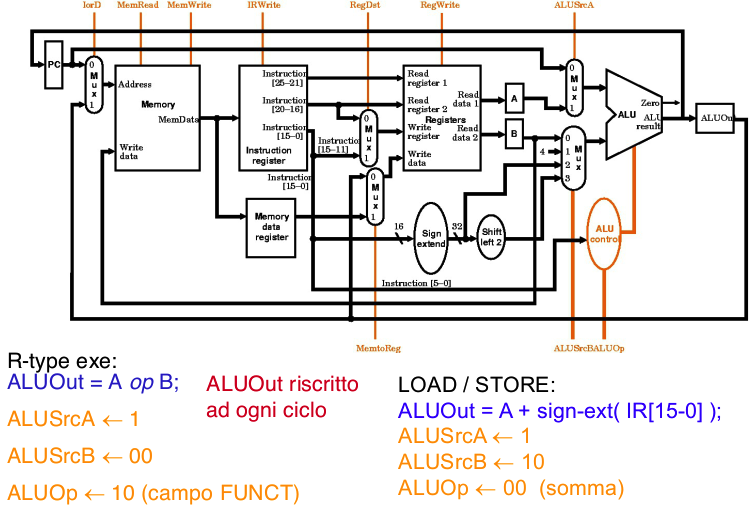
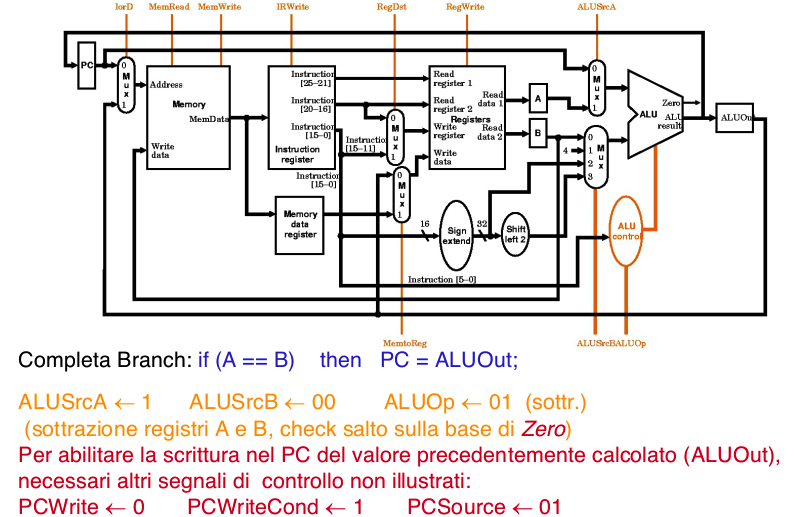
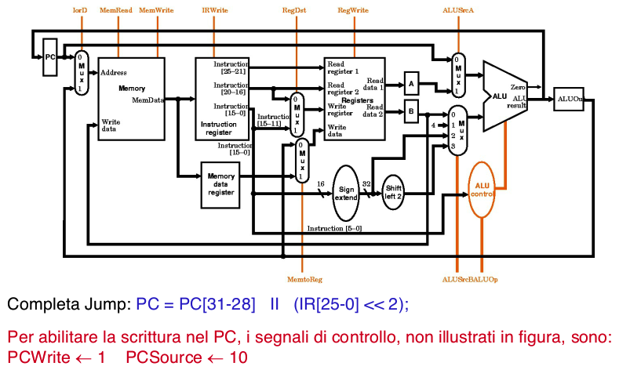
- PC = PC[31-28] || (IR[25-0] << 2);
11 Passo 4: (dipende dall’istruzione)
LOAD e STORE accedono alla memoria
- LOAD
- MDR = Memory[ALUOut]
- STORE
- Memory[ALUOut] = B;
Terminazione istruzioni R-Type
- Reg[ IR[15-11] ] = ALUOut;
Durante questo passo usiamo:
- Register File (Write) oppure Memoria
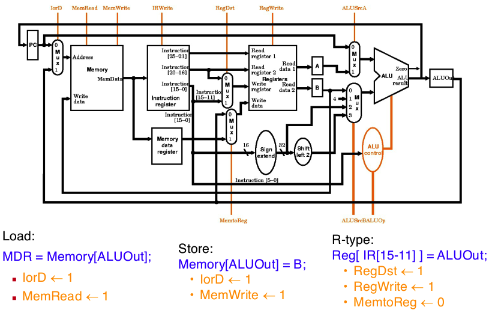
12 Passo 5: Write-back (LOAD)
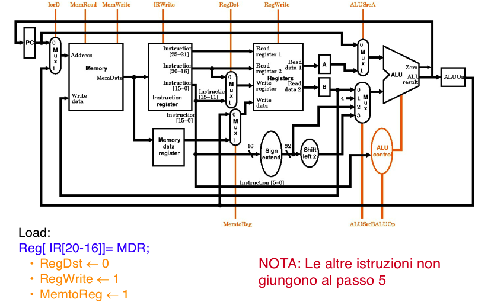
13 Riassumendo
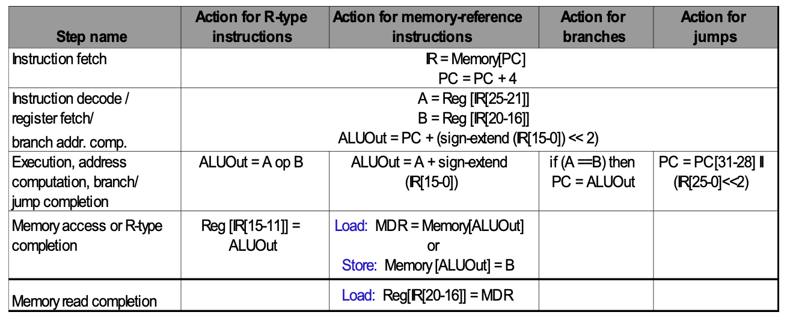
14 Definizione del controllo
Possiamo implementare il controllo della CPU come un circuito sequenziale di Moore, modellato con un automa a stati finiti
Automa
- Ogni nodo corrisponde ad uno stato differente del circuito, in corrispondenza di un certo ciclo di clock
- Gli output del controllo (segni di controllo) dipendono dallo stato corrente
- Da 3 a 5 stati devono essere attraversati (ovvero, da 3 a 5 cicli di clock)
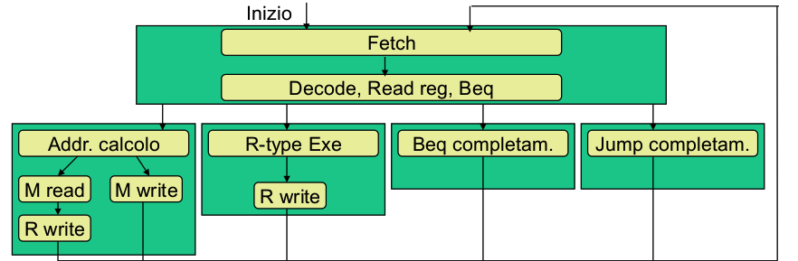
15 Automa Completo
- Etichette interne ai nodi
- Corrispondono ai segnali che il Controllo deve inviare al Datapath
- Etichette sugli archi
- Dipendono dagli input del controllo ovvero dal valore del campo Op dell’istruzione letta
- 10 stati
- Ogni stato associato con un’etichetta mnemonica, e anche con un identificatore numerico
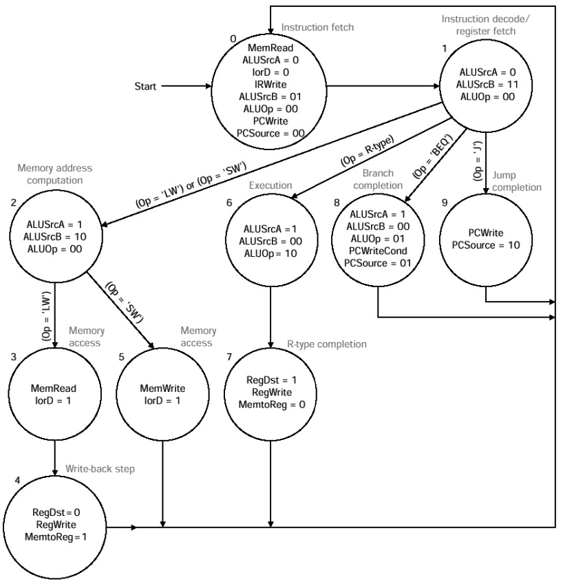
- Ogni stato associato con un’etichetta mnemonica, e anche con un identificatore numerico
16 Componenti CPU ( Datapath + Control ) e Memoria
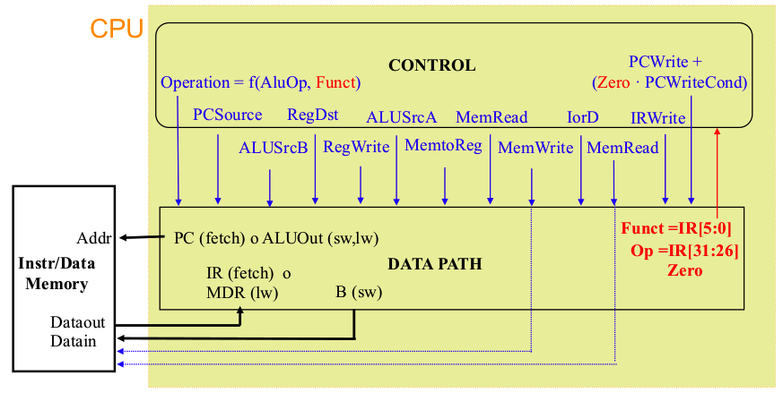
17 Dimensione ciclo di clock
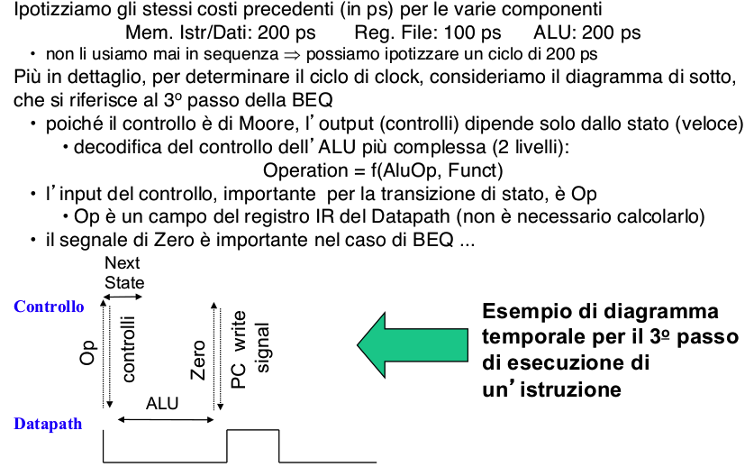
18 Costo istruzioni
Per le varie istruzioni, possiamo impiegare un numero differente di cicli
- Introduciamo il concetto di CPI ( Cicli Per Istruzione )
Quant’è il CPI delle varie istruzioni rispetto all’architettura multi-ciclo?
- R-Type, sw: 4 cicli (tempo: 800 ps)
- lw: 5 cicli ( tempo: 1000 ps = 1 ns )
- beq, jump: 3 cicli (tempo: 600 ps)
L’istruzione lw impiega ben 1 ns invece degli 800 ps dell’architettura a singolo ciclo
- Purtroppo ciò è dovuto alla necessità di fissare il ciclo di clock abbastanza lungo da permettere l’esecuzione di uno qualsiasi dei passi previsti per le varie istruzioni
- Il 5° passo della lw, anche se usa solo il Register File (latenza 100 ps), viene comunque eseguito in un ciclo di clock da 200 ps
19 Costo istruzioni
Abbiamo ottenuto un risparmio solo per le istruzioni di beq e jump
- Se avessimo considerato istruzioni molto più lunghe ( come quelle FP ), non avremmo osservato questo apparente decadimento di prestazione nel passare all’architettura multi-ciclo
- In quel caso, la scelta del ciclo singolo ci avrebbe costretto ad allungare a dismisura il ciclo di clock per eseguire le istruzioni FP
20 Circuito sequenziale che implementa il controllo
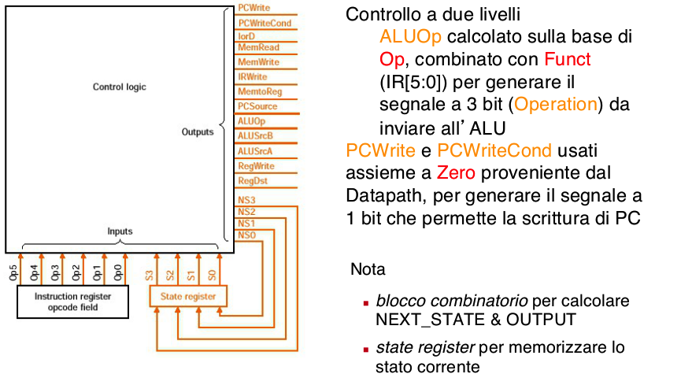
20.1 Realizzazione del blocco combinatorio
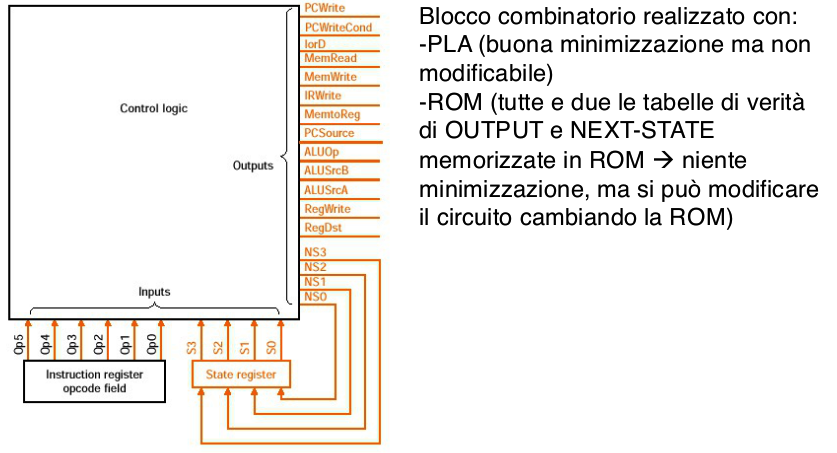
21 Automa rappresentato da un microprogramma
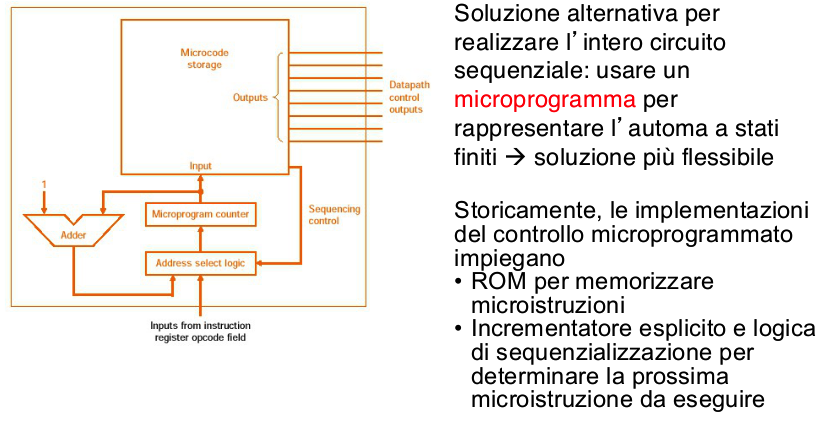